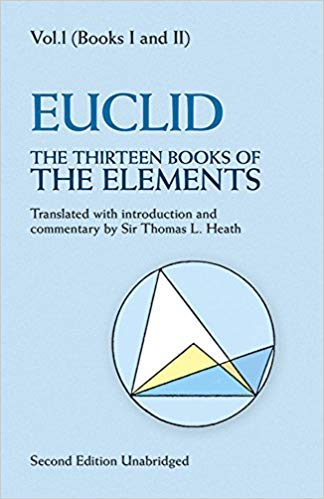
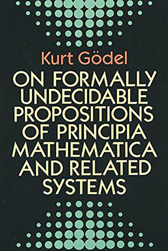
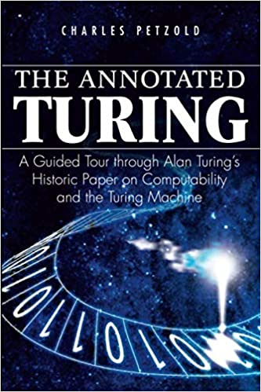
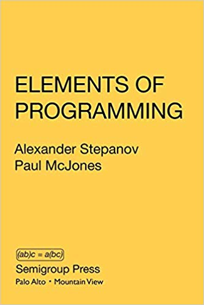
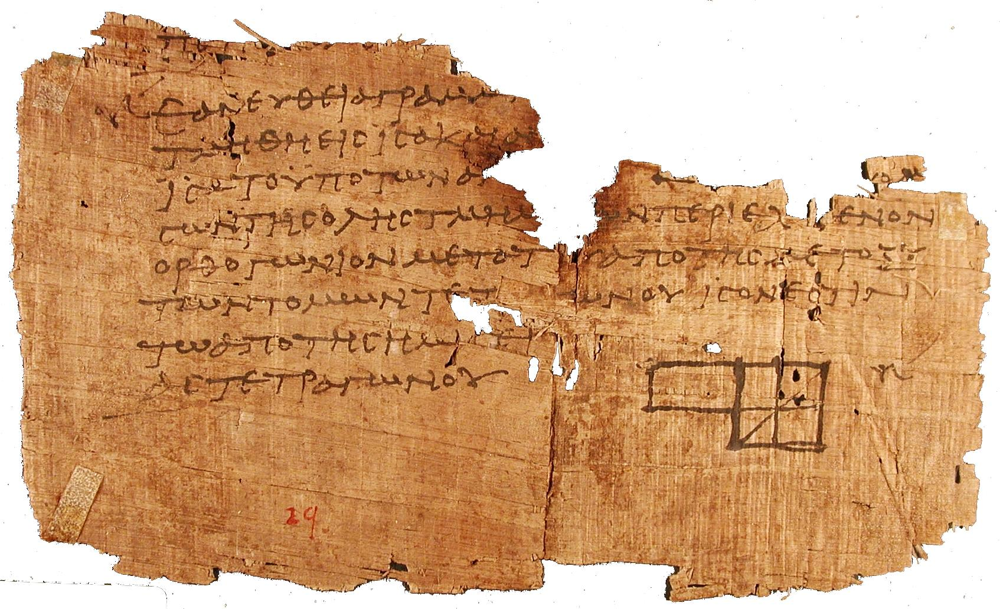
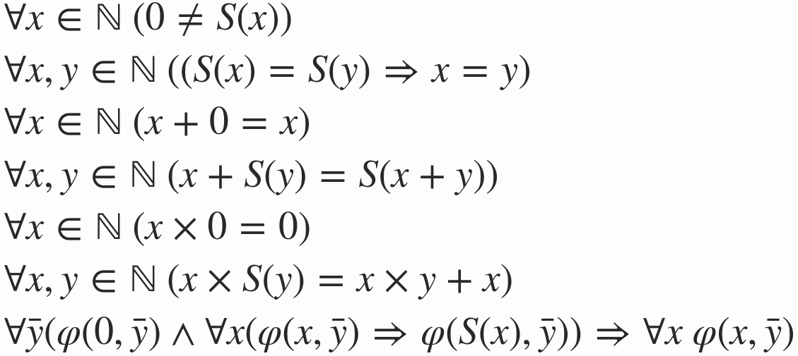

# Name the function

While we wait to start: what would be a suitable name for the function below?

```cpp
template<typename T>
T fn(T a, T b) {
  while (true) {
    if ( b < a ) a -= b;
    else if (a < b) b -= a;
    else return a;
  }
}
```

---

Mircea Baja - 12 June 2020

# Irregularity in Generic Programming

## Part III: Bibliography

---
class: large-points

# Agenda

- Brief history of mathematics - a lot of Euclid and a bit of Gödel
- Stepanov's Elements of Programming
- Brief history of support for concepts in C++

---

# Books

<table>
<tr>
<td></td>
<td></td>
<td></td>
<td></td>
</tr>
</table>

---

# Euclid's Elements

<table>
<tr>
<td></td>
</tr>
</table>

---

# Triplets

<div align="center">
{% include assets/2018-11-07-maths-history/01-three_four_five.svg %}
</div>

---

# Proof

<div align="center">
{% include assets/2018-11-07-maths-history/03-pythagoras.svg %}
</div>

---

# Infinity

<div align="center">
{% include assets/2018-11-07-maths-history/02-square-2.svg %}
</div>

---

<table>
<tr>
<td></td>
</tr>
</table>


---
class: large-points

# Definitions


- B.I D.1: A point is that of which there is no part.
- ...
- B.I D.22: And of the quadrilateral figures: a square is that which is
  right-angled and equilateral ...

---

# Postulates

<div align="center">
{% include assets/2020-06-12-irregularity-part-3-books/01-postulates.svg %}
</div>


---

# Common notions

<div align="center">
{% include assets/2020-06-12-irregularity-part-3-books/02-common.svg %}
</div>


---

# Book I, Proposition 47

<div align="center" style="width:90%">
{% include assets/2018-11-07-maths-history/04-euclid.svg %}
</div>

---
class: large-points

# Direct results

- Euclidian geometry
- geometric algebra
- subtractive GCD
- square root of two: infinity
- infinite prime numbers
- Platonic solids (4, 6, 8, 12, 20) - not all numbers are the same


---
class: large-points

# Scolia

- the need for scolia in classic style
- only prove the difficult case (e.g. B.I P.7 has additional cases that require
  2nd part of B.I P.5)
- systematic exploration of a problem: the converse propositions, but also
  more complex cases like the congruence of triangles
- analysis and synthesis

---
class: large-points

# Logic and reasoning

- the historical benefit/coin story
- demonstrative proofs rather than empirical methods
- axiomatic system: avoid circular reasoning
- reduction to absurd
- definition: what it is and that it is: B.I P.46
- definition in the negative: B.I D.1
- definition in the logical vs intuitive order
- demonstration of things that cannot be done e.g. B.I P.7
- the power of reasoning: atoms
- the dangers of pseudo-reasoning: life on other planets
- the aesthetic choice in mathematics

---
class: large-points

# Various

- Zeno
- Diophantus
- al-Khwarizmi - the Arabs

---

# Hyperbolic (Poincaré disk)

<div align="center">
{% include assets/2020-06-12-irregularity-part-3-books/03-hyperbolic.svg %}
</div>

---

# Elliptic (Sphere geodesic lines)

<div align="center">
{% include assets/2020-06-12-irregularity-part-3-books/04-elliptic.svg %}
</div>

---
class: large-points

# Cantor

- 1, 2, 3, 4, 5, ...
- 1, 4, 9, 16, 25, ... (Galileo's paradox)
- 0, 1, 2, 3, 4, ... (natural numbers)
- 0, -1, 1, -2, 2, ... (integers)
- 1/1, 1/2, 2/1, 1/3, 2/3, 3/1, ... (rationals)
- ..., sqrt(2), ... (solutions of algebraic equations)

---

# Peano

<table>
<tr>
<td></td>
</tr>
</table>


---
class: large-points

# -isms

- Paradoxes
- Logicisms
- Intuitionism / constructivism
- Formalism
- Consistency
- Wir müssen wissen – wir werden wissen

---

# Gödel's Incompleteness

<table>
<tr>
<td></td>
</tr>
</table>

---

# Turing's machine

<table>
<tr>
<td></td>
</tr>
</table>

---

# Stepanov's Elements (EOP)

<table>
<tr>
<td></td>
</tr>
</table>

---
class: large-points

# About EOP

- Bjarne Stroustrup: "some of the most beautiful code I've ever seen"
- relatively short book
- in classic style
- lacks scolia
- the structure of STL (algorithms with some data structures)
- concepts
- multithemed
- recurring themes: efficiency, mathematical foundation of algorithms, etc.
- systematic exploration of the fundamentals of (generic) programming for a
  machine with a CPU and memory

---
class: large-points

# EOP Contents

- Chapter 1
- Chapter 2
- Chapter 3
- Chapter 4
- Chapter 5
- ...
- Chapter 12
- Appendix A and B

---
class: large-points

# EOP Concepts syntax

```cpp
template<typename I>
    requires(Readable(I) && Iterator(I))
I find(I f, I l, const ValueType(I)& x)
{
    // Precondition: readable_bounded_range(f, l)
    while (f != l && source(f) != x) f = successor(f);
    return f;
}
```

---
class: large-points

# GCD in rotate


---
class: large-points

# Regularity/Irregularity

- the importance of Euclid's common notions
- equality and (strict total) order
- the complexity of equality
- stronger: identity
- weaker: congruence
- even weaker: same area
- actually the importance of relations

---
class: large-points

# C++ concepts

- long history
- C++11
- EOP
- Redesign for C++20, usage: [Good concepts](https://www.stroustrup.com/good_concepts.pdf)
- Irregularity [SLE2011](http://www.stroustrup.com/sle2011-concepts.pdf)

---

# Questions?

